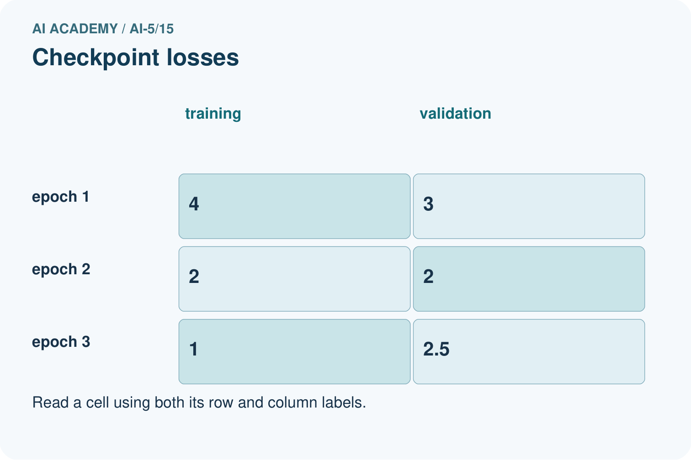
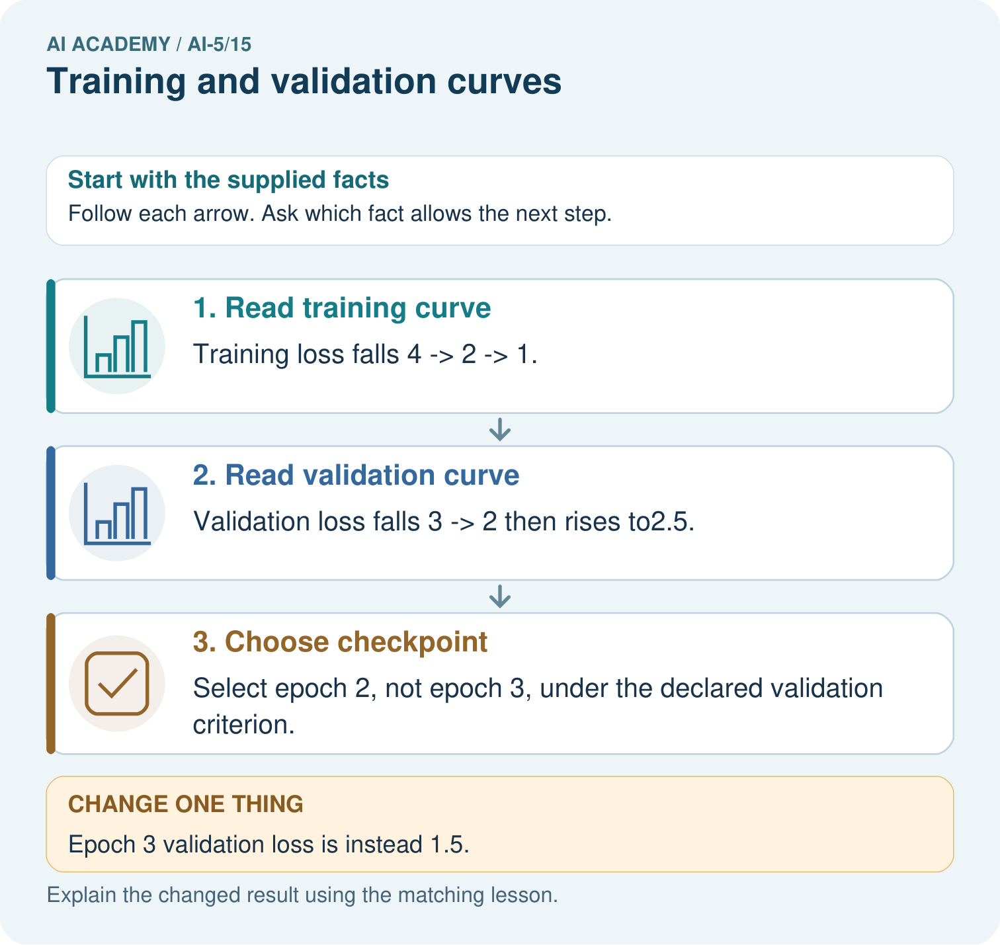
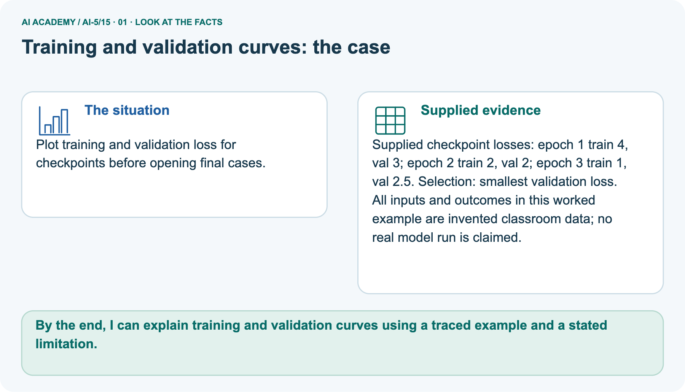
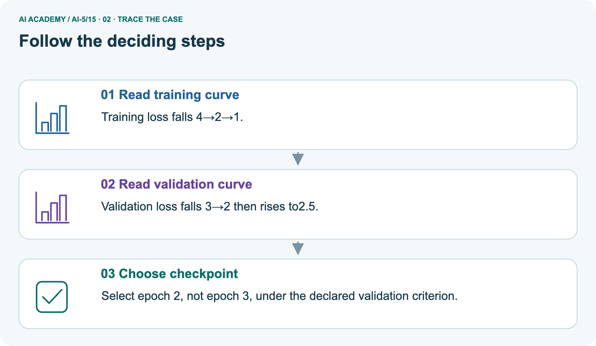
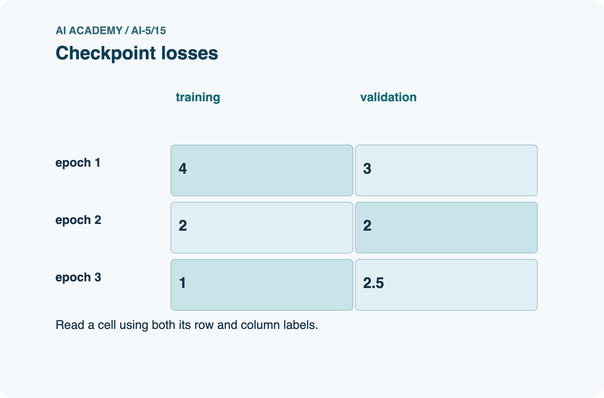
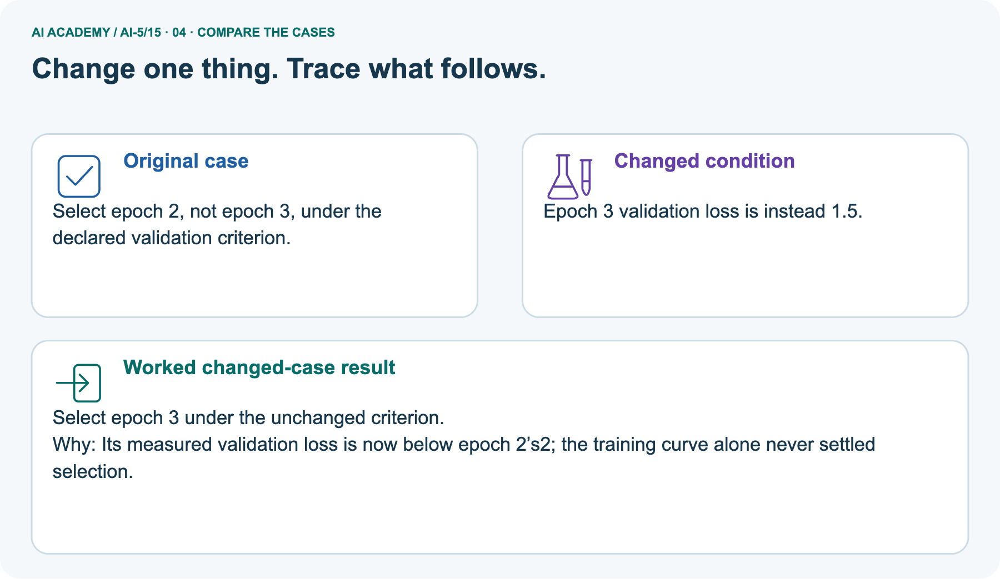
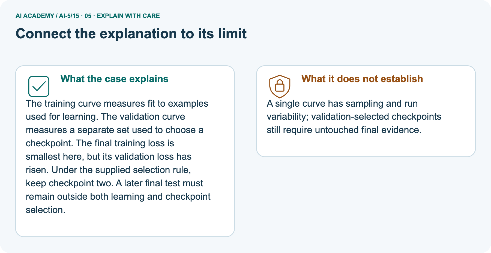

AI Academy · Level 5 · Grade 10 · Week 15 · Teacher guide
Training and validation curves
Learn to understand, design, build, test and explain AI systems responsibly.
Project: Image-pattern Network Investigation
Teacher guide · 1 of 9
Prepare the purpose, prerequisites and materials
Prepare Training and validation curves: check the target, prerequisites, resources and adaptable teaching schedule.
Teach the learning cycle
Primary target: Compute comparable training and validation losses at saved checkpoints
| Session | Sequence and minutes | Resources |
|---|---|---|
| Session 1 · Understand · 45 min | 0–7: recall and prerequisite; 7–15: inspect the concrete case and predict; 15–30: teacher models the worked trace; 30–40: learners explain a step using the text and visual; 40–45: check the core idea. | Use Your mission, Notice the evidence, See how it works, Words that unlock the idea and Follow a worked example; record recall in the workbook. |
| Session 2 · Practise · 45 min | 0–5: retrieve the procedure; 5–15: W2 completion practice; 15–23: explain and check with a partner; 23–30: each learner answers the misconception check; 30–40: targeted reteaching or a harder variation; 40–45: prepare the investigation. | Use Find and repair a mistake, Practise together and Build your understanding; use the matching workbook W2 and Individual reasoning check. |
| Session 3 · Investigate and transfer · 45 min | 0–5: retrieve the decision rule; 5–20: investigate or trace; 20–30: start the independent case; 30–38: connect the project; 38–43: act on feedback; 43–45: plan the return check. | Use Run the investigation, Connect your project and Try a new case independently. Allow extra time for the full task set. When code is supplied, use the examples in See how it works or Follow a worked example and the browser lab in Supported practice, repair and portfolio. |
This is a starting allocation of 135 minutes, not a validated duration. Preserve all named topics. Schedule extra time for connected examples, the full investigation, independent cases and project building.
Repeated copies of a case share one recorded attempt; they are not new evidence.
Retrieval answer guidance
Learning rate experiments
Without opening the old lesson, explain one key idea from Learning rate experiments. Give an example and a mistake that the idea helps you avoid.
Look for: Run a controlled comparison of learning rates
Reference example, not the only acceptable wording: Teacher explanation: First v = 0.5 with MSE 5.625. Second gradient -7.5 gives v = 0.875 and MSE 3.1640625. Distance is multiplied by 0.75 each step.
Training a small network
Without opening the old lesson, explain one key idea from Training a small network. Give an example and a mistake that the idea helps you avoid.
Look for: Trace repeated forward loss gradient and update steps
Reference example, not the only acceptable wording: Teacher explanation: Predictions [0, 0], errors [-2, -4], MSE 10, gradient -10 and new v = 1.
Slopes and local change
Without opening the old lesson, explain one key idea from Slopes and local change. Give an example and a mistake that the idea helps you avoid.
Look for: Calculate an average rate of change over a stated interval
Reference example, not the only acceptable wording: Teacher explanation: Average slope is (0 - 4) / 2 = -2. The local slope at 2 is zero. They describe different locations or intervals.
For the compact alternative schedule, use two 45-minute sessions. Have students draw checkpoint number horizontally and MSE vertically, using one clearly labelled scale for both curves.
Explicitly name the differing target rules in this synthetic example so the picture is not misrepresented as proof of a single overfitting mechanism. Keep checkpoint selection separate from parameter updates.
Outcomes
Compute comparable training and validation losses at saved checkpoints
Choose among observed checkpoints using a declared validation rule
Distinguish development evidence from final test evidence
Preparation
Printed lesson and workbook; paper and pencil
Calculator and optional local Python 3 editor; no packages or AI accounts needed
Use the fictional examples supplied; prepare the fresh retry before class
Prerequisite answer
Training loss measures fit to the examples used for updates. Independent performance needs suitable separate evidence, and settings selected using validation must not be presented as independent final testing.
End goal for the pictorial case
By the end, I can explain training and validation curves using a traced example and a stated limitation.
This added worked case illustrates the week’s main idea. Retain all original and connected topics; schedule its practice within the teaching cycle.
Teacher guide · 2 of 9
Explain and model the mechanism
Model Training and validation curves using the supplied case, labelled mechanism and reasoning. Make the scope of each conclusion explicit.
Explain Training and validation curves · 1
Keep the restricted network h = ReLU(x), y = vh, with only v trained. Training pairs remain (1, 2) and (2, 4). Start v = 0 and make four full-data updates at rate 0.1. Save states v = 0, 1, 1.5, 1.75 and 1.875.
At each saved state, evaluate both splits without changing v during evaluation.
Explain Training and validation curves · 2
For this deliberately constructed demonstration, validation pairs are (3, 4.5) and (4, 6). Their targets follow a different slope from the training pairs.
This makes the two trends disagree visibly; it is not evidence that these few rows represent a real population. Validation labels do not enter the gradient.
Both columns use ordinary MSE in the same target units, evaluated on their own fixed rows. Training MSE is 2.5(v - 2) squared; validation MSE is 12.5(v - 1.5) squared.
Different input values and target rules affect the loss levels. A gap alone does not identify its cause.
For checkpoint 3, v = 1.75. Training predictions are [1.75, 3.5], residuals [-0.25, -0.5], and MSE 0.15625. Validation predictions are [5.25, 7], residuals [0.75, 1], and MSE 0.78125.
All four predictions must use the same saved value.
The code evaluates supplied checkpoints; it does not train on validation data. It assumes finite numeric pairs and selects the lowest observed validation MSE, breaking exact ties in favour of the earlier checkpoint.
The rule is chosen before inspecting the values.
| Term | Meaning |
|---|---|
| Checkpoint | Saved model parameters and the information needed to identify a training state |
| Training curve | A record of a training measure at successive saved states |
| Validation curve | A record of a development measure on separate examples at those states |
| Selection rule | A declared procedure for choosing among candidate models or checkpoints |
Later updates improve only one split
| Series | 2 | 3 | 4 |
|---|---|---|---|
| Training solid line | 0.625 | 0.15625 | 0.0390625 |
| Validation dashed line | 0 | 0.78125 | 1.7578125 |
Explain Training and validation curves · 3
Guided: training changes by 0.0390625 - 0.625 = -0.5859375; validation changes by 1.7578125 - 0 = 1.7578125. Select checkpoint 2 with v = 1.5.
Exit: zero on selected validation examples is limited development evidence, and choosing with test results turns that test into development data.
Freeze choices using training/validation, then evaluate once on suitable untouched test examples and report the scope.
Model the reasoning aloud
Use the complete worked example below before asking learners to complete W2. Reveal a small part, invite a prediction, then explain the deciding step.
These teacher notes contain solutions; do not reveal the independent case answer during modelling.
Later updates improve only one split
| Series | 2 | 3 | 4 |
|---|---|---|---|
| Training solid line | 0.625 | 0.15625 | 0.0390625 |
| Validation dashed line | 0 | 0.78125 | 1.7578125 |
| Thinking move | Teacher prompt |
|---|---|
| Plan | What is given? What is the question? Which procedure fits these facts? |
| Do | Point to each input and intermediate step in the worked trace. Name the rule that allows the next step. |
| Check | Does the output answer the question? Which assumption or limitation prevents a larger claim? |
Use the diagram and verbal explanation together. Ask learners to match a sentence to a specific visual step; do not assign learners fixed visual or auditory learning styles.
A pictorial worked case: Training and validation curves
Plot training and validation loss for checkpoints before opening final cases.
The facts we will use
Supplied facts
Supplied checkpoint losses: epoch 1 train 4, val 3; epoch 2 train 2, val 2; epoch 3 train 1, val 2.5. Selection: smallest validation loss.
Supplied facts
All inputs and outcomes in this worked example are invented classroom data; no real model run is claimed.


Read the picture one step at a time
Why this result follows
Why the result follows
The training curve measures fit to examples used for learning. The validation curve measures a separate set used to choose a checkpoint. The final training loss is smallest here, but its validation loss has risen.
Under the supplied selection rule, keep checkpoint two. A later final test must remain outside both learning and checkpoint selection.
What this example does not establish
Keep the stated limit
A single curve has sampling and run variability; validation-selected checkpoints still require untouched final evidence.
Change one thing in the pictured case
Change one thing
Change: Epoch 3 validation loss is instead 1.5.
Predicted result
Prediction: Select epoch 3 under the unchanged criterion.
Why the result follows
Reason: Its measured validation loss is now below epoch 2’s2; the training curve alone never settled selection.
Ask while showing the picture
Ask while showing the picture · 4
Cover the result. Ask learners to name the inputs and predict the next step. Uncover one step, connect the icon to the actual procedure, and explain its evidence. Then change the supplied condition and compare.
The picture is a representation; it does not document execution of a real AI model.
Teacher guide · 3 of 9
Demonstrate and guide practice
Demonstrate Training and validation curves, reduce support deliberately and check individual reasoning before discussing answers.
| Time or stage | Teacher action |
|---|---|
| Session 1 start to 7 minutes | Retrieve why training performance alone cannot select for independent performance. |
| 7 to 18 minutes | Identify the two fixed splits and trace checkpoint 1; complete W1. |
| 18 to 32 minutes | Calculate checkpoint 3 by hand and plot all supplied points on one MSE scale. |
| 32 to 45 minutes | Run or trace the evaluation code, then use W2 to practise the exact tie rule. |
| Session 2 start to 8 minutes | Complete the guided comparison of checkpoints 2 and 4; identify the parameter to restore. |
| 8 to 20 minutes | Use W3 and W5 to examine metric comparability and alternative causes of a widening gap. |
| 20 to 35 minutes | Collect W4 independently with both loss columns and the explicit selection rule. |
| 35 to 45 minutes | Use the exit question and fresh retry; require a distinction between selection and untouched final testing. |
Use See how it works and Follow a worked example. Collect a prediction before revealing its result; ask the learner to point to each intermediate fact.
Provide squared-error columns and labelled axes, allowing calculators. Extension: derive the two quadratic loss expressions and locate their different minima.
Explain why this constructed mismatch makes the validation optimum occur before the training optimum.
Reduce help deliberately
Completion practice
Completion task: Observed validation MSE at checkpoints 0 to 4 is [5, 2, 1, 1, 1.2]. Lowest loss wins with earlier exact ties. Which checkpoint is selected? What if training loss is lowest at checkpoint 4?
Reasoning to listen for
Teacher check: Teacher explanation: Select checkpoint 2. The tie at 3 does not replace the earlier checkpoint. Lower training loss at 4 does not change a validation-based rule.
Start by identifying the given inputs together. Leave the intermediate steps blank. If needed, model one step, then withdraw that help on the next step. Move to a full trace only when the partial trace is understood.
For partners, alternate explainer and checker; collect a response from every learner before discussion.
Individual reasoning check
Use the worked case for Training and validation curves. Proposed explanation: “The last checkpoint is always best”. Decide whether this explanation is supported.
Point to the step or supplied fact that decides; explain your repair if needed.
Expected repair
Expected correction: Choose by the stated validation criterion and restore the saved parameters.
Collect explanations, not only yes/no votes. If a misunderstanding is common, re-model the relevant step for the class.
If it affects a few learners, give a short targeted group explanation while others solve a more demanding variation.
Pictorial practice question
Can the original epoch 3 training loss 1 justify claiming best generalisation? Point to the relevant step in the picture, then write the changed result and the rule or evidence that supports it.
Reasoned teacher answer
No. Original validation loss 2.5 exceeded epoch 2’s2. Freeze the selected checkpoint before final evaluation. Changed-case check: Select epoch 3 under the unchanged criterion.
Its measured validation loss is now below epoch 2’s2; the training curve alone never settled selection.
Changed-case reasoning: Select epoch 3 under the unchanged criterion. Its measured validation loss is now below epoch 2’s2; the training curve alone never settled selection.
Collect each learner’s explanation before discussion. Use the first missing connection between input, deciding step and result to choose support. This question is worked-case practice, not fresh mastery evidence.
Teacher guide · 4 of 9
Run the investigation and diagnose misconceptions
Run the Training and validation curves investigation and use the first unsupported step to choose a teaching response.
The last checkpoint is always best: Choose by the stated validation criterion and restore the saved parameters.
A gap proves one specific cause: Check split composition, metrics and evaluation procedures; this demonstration has deliberately different target rules.
Validation is untouched final evidence: Once used to choose settings or checkpoints, it is development evidence.
Use Run the investigation for the evidence ledger. Add a boundary or missing-input case and record the expected response before checking. More successful repeats of one case do not establish wider coverage.
Match the support to the first error
| What the response shows | Next teaching action |
|---|---|
| Missing or misread facts | Read the case aloud, mark supplied versus unknown facts, and let the learner restate it. |
| Wrong procedure | Return to the deciding step in the worked case. Contrast it with the proposed incorrect explanation. |
| Arithmetic or implementation error | Trace intermediate values or lines; preserve the first mismatch and retry that step. |
| Correct result without a reason | Ask for a trace and a changed case before marking independent understanding. |
| An unsupported wider claim | Ask which supplied evidence supports the claim and which further observation would be needed. |
Offer an oral explanation, drawing, enlarged visual or fewer examples when that removes a reading/writing barrier. Keep the same reasoning goal.
Stretch secure learners by changing a boundary or assumption and asking them to defend the effect, not simply by assigning more of the same questions.
Teacher guide · 5 of 9
Assess and explain the answers
Use the Training and validation curves questions, teacher keys and criteria after the relevant attempts. Previously discussed cases are practice; protect the separately selected independent task.
Guided and exit questions
Guided: training changes by 0.0390625 - 0.625 = -0.5859375; validation changes by 1.7578125 - 0 = 1.7578125. Select checkpoint 2 with v = 1.5.
Exit: zero on selected validation examples is limited development evidence, and choosing with test results turns that test into development data.
Freeze choices using training/validation, then evaluate once on suitable untouched test examples and report the scope.
W1 Recover a plotted point
Workbook question · W1
At v = 1, compute both validation predictions, residuals and MSE on (3, 4.5) and (4, 6).
Teacher reasoning · W1
Teacher explanation: Predictions [3, 4], residuals [-1.5, -2], squares [2.25, 4], MSE 3.125.
W2 Use the declared rule
Workbook question · W2
Observed validation MSE at checkpoints 0 to 4 is [5, 2, 1, 1, 1.2]. Lowest loss wins with earlier exact ties. Which checkpoint is selected? What if training loss is lowest at checkpoint 4?
Teacher reasoning · W2
Teacher explanation: Select checkpoint 2. The tie at 3 does not replace the earlier checkpoint. Lower training loss at 4 does not change a validation-based rule.
W3 Repair incompatible measures
Workbook question · W3
A training report shows sum of squared errors 12 over six rows. Validation shows mean squared error 3 over two rows in the same target units. A learner says training error is four times larger. Repair the comparison.
Teacher reasoning · W3
Teacher explanation: Training MSE is 12 / 6 = 2. Compare 2 with validation MSE 3, not sum 12 with mean 3. The split sizes and examples still limit interpretation.
W4 Evaluate new checkpoints independently
Workbook question · W4
Use h = ReLU(x), y = vh, candidate v values 1, 1.5 and 2. Training pairs are (1, 2), (2, 4); validation pairs are (1, 1), (2, 2). Calculate both MSE columns and select by minimum validation MSE.
Explain the disagreement with selection by training loss.
Teacher reasoning · W4
Teacher explanation: For v = 1, train MSE 2.5 and validation MSE 0. For v = 1.5, both MSE values are 0.625. For v = 2, train MSE 0 and validation MSE 2.5. Validation chooses v = 1; training chooses v = 2.
These constructed splits favour different slopes.
W5 Limit a curve diagnosis
Workbook question · W5
Training loss falls while validation loss rises. Give two checks before declaring model complexity the cause, and explain why repeatedly selecting with validation makes it development evidence.
Teacher reasoning · W5
Teacher explanation: Possible checks include comparable loss definitions, unchanged preprocessing and evaluation settings, split representativeness, leakage and label quality.
Repeated selection uses validation outcomes to guide choices, so final evaluation needs separate untouched examples.
Independent assessment and fresh retry
Teacher key · Independent assessment and fresh retry
W4 requires all six MSE values and the validation choice v = 1. Fresh retry: candidates v = 0.5, 1, 1.5 and validation pairs (2, 2), (4, 4). MSE values are 2.5, 0 and 2.5, so choose v = 1.
Ask what the result establishes and why it is not final test evidence after selection.
Assess independent transfer
Independent question · withhold the key
Selected case: Use h = ReLU(x), y = vh, candidate v values 1, 1.5 and 2. Training pairs are (1, 2), (2, 4); validation pairs are (1, 1), (2, 2). Calculate both MSE columns and select by minimum validation MSE.
Explain the disagreement with selection by training loss.
Selected case answer
Teacher key · Selected case answer
Teacher explanation: For v = 1, train MSE 2.5 and validation MSE 0. For v = 1.5, both MSE values are 0.625. For v = 2, train MSE 0 and validation MSE 2.5. Validation chooses v = 1; training chooses v = 2.
These constructed splits favour different slopes.
| Dimension | Evidence required |
|---|---|
| Explanation | Names the applicable idea or procedure and ties it to the supplied facts. |
| Trace and result | Preserves the given inputs and shows the relevant intermediate steps; distinguishes a prediction from an observed execution. |
| Limits | States the assumptions, missing evidence or conditions under which the result would change. |
Teacher key · Selected case answer
Record each dimension as not yet, with support, or independent. Accept a valid alternative procedure with a defensible trace.
Do not penalise an honestly recorded model failure if the learner correctly explains its evidence and limits.
Feedback that the learner uses
Name the earliest unsupported step and give one action to repair it. Have the learner make that repair now and explain why. Then assess the relevant skill on a fresh, fully specified case.
Confirm it was not previously practised with feedback; solve and check the new case before assigning it. A follow-up design prompt is a starting brief, not automatically an equivalent test.
Teacher guide · 6 of 9
Connect the project, support and next lesson
Connect Training and validation curves to Image-pattern Network Investigation, adapt support and plan a later changed-case check.
Add a labelled training and validation curves evidence sheet to Image-pattern Network Investigation. Show how you can compute comparable training and validation losses at saved checkpoints.
Use the supplied fictional case and keep its inputs, intermediate steps, calculation or prediction, and limitation. Connect this record to last week’s record; a matching answer without a trace is insufficient.
Provide squared-error columns and labelled axes, allowing calculators. Extension: derive the two quadratic loss expressions and locate their different minima.
Explain why this constructed mismatch makes the validation optimum occur before the training optimum.
Week 16 introduces a weight penalty and a precise early-stopping policy.
Retain the project ledger and assess a changed case after support. Check the relevant prerequisite before carrying this component forward.
Plan the delayed return
Suggested return points in this level: ai-5/16, ai-5/18, ai-5/21. Use actual classroom dates, adjusting for holidays and gaps. One, three and six teaching weeks are scheduling choices, not a claimed optimal spacing.
At a delayed check, ask for the idea from memory and a changed application. Compare with the earlier independent response and record support used.
For a new level, revisit the previous capstone before checking the new prerequisites.
| Record | Teacher evidence |
|---|---|
| Learner code and date | |
| Concept and case used; prior exposure | |
| Explanation / trace / limits | |
| Support and first repair | |
| Changed case and delayed outcome | |
| Next teaching action |
Use the evidence to choose reteaching or the next step. A completed page, confidence rating or attractive project does not by itself demonstrate understanding.
Project evidence from this case
For your Image-pattern Network Investigation, save the input, procedure, observed result and limitation of this check.
Label this worked example as practice; use a different, previously unreviewed case when checking independent understanding.
Teacher guide · 7 of 9
Prepare, teach and assess
Use this preparation summary alongside the detailed Training and validation curves lesson; it is a checklist rather than a replacement for the full sequence.
Teaching target
Teaching target: Compute comparable training and validation losses at saved checkpoints
Prepare the labelled worked-case picture, the matching workbook, fictional input cards and a place for individual responses. Check a local Python 3 environment before class; have a paper-trace version ready.
| Session | Plan | Resources |
|---|---|---|
| Session 1 · Understand · 45 min | 0–7: recall and prerequisite; 7–15: inspect the concrete case and predict; 15–30: teacher models the worked trace; 30–40: learners explain a step using the text and visual; 40–45: check the core idea. | Use Your mission, Notice the evidence, See how it works, Words that unlock the idea and Follow a worked example; record recall in the workbook. |
| Session 2 · Practise · 45 min | 0–5: retrieve the procedure; 5–15: W2 completion practice; 15–23: explain and check with a partner; 23–30: each learner answers the misconception check; 30–40: targeted reteaching or a harder variation; 40–45: prepare the investigation. | Use Find and repair a mistake, Practise together and Build your understanding; use the matching workbook W2 and Individual reasoning check. |
| Session 3 · Investigate and transfer · 45 min | 0–5: retrieve the decision rule; 5–20: investigate or trace; 20–30: start the independent case; 30–38: connect the project; 38–43: act on feedback; 43–45: plan the return check. | Use Run the investigation, Connect your project and Try a new case independently. Allow extra time for the full task set. When code is supplied, use the examples in See how it works or Follow a worked example and the browser lab in Supported practice, repair and portfolio. |
Before class, solve the supported practice: Observed validation MSE at checkpoints 0 to 4 is [5, 2, 1, 1, 1.2]. Lowest loss wins with earlier exact ties. Which checkpoint is selected?
What if training loss is lowest at checkpoint 4?
Supported practice answer
Reasoned practice answer: Teacher explanation: Select checkpoint 2. The tie at 3 does not replace the earlier checkpoint. Lower training loss at 4 does not change a validation-based rule.
Check every learner before discussion: Use the worked case for Training and validation curves. Proposed explanation: “The last checkpoint is always best”. Decide whether this explanation is supported.
Point to the step or supplied fact that decides; explain your repair if needed.
Repair the misconception
Misconception repair: Choose by the stated validation criterion and restore the saved parameters.
Support without giving away the answer
Support: read the exact case aloud, enlarge the labelled picture, supply input cards and model only the first deciding step. Accept a spoken explanation or drawing; retain the reasoning goal.
Extend the reasoning
Extension: Epoch 3 validation loss is instead 1.5. Require a prediction and a reason before comparing. Expected result: Select epoch 3 under the unchanged criterion.
Reason: Its measured validation loss is now below epoch 2’s2; the training curve alone never settled selection.
Protect the independent attempt
Independent assessment: withhold the reserved answer until the learner has attempted the new case. Record support separately from correctness.
| Criterion | Not yet | With support | Independent |
|---|---|---|---|
| Explanation | Names an answer without a deciding fact | Uses a hint to link fact and decision | Explains the deciding fact in own words |
| Trace or test | Cannot connect input and result | Completes steps with prompts | Traces or tests a changed case accurately |
| Limits and revision | Claims more than evidence supports | Names a limit after a prompt | States a defensible limit and useful next test |
Project checkpoint
Project checkpoint: Test changed cases. Keep normal, boundary and failure cases; compare expected and observed results.
Use the weekly teacher answer for topic-specific reasoning. A saved progress tick is an activity record; judge mastery from the learner’s explanation and evidence.
Teacher guide · 8 of 9
Use feedback, labs and repair paths
Use feedback, earlier review and portfolios purposefully. Apply the coding routine only when this lesson has an executable lab.
Use the two formative questions as supported practice, not as independent mastery scores. Discuss the deciding evidence rather than accepting a guessed selection.
The feedback comes from the reviewed public worked case. Do not reveal the separately reserved independent teacher answer until the learner has attempted that case.
Ask students to predict before running code. Preserve errors and actual outputs; collect a changed test and an explanation. The branch-boundary and indexing lessons deliberately include failure cases.
Use the earlier worked-explanation links to address a specific missing building block, then return to the current question. Adapt this suggestion after observing the learner; it is not an automatic diagnosis.
Collect the completed-work portfolio as evidence. Record support separately from correctness, and assess explanation, trace/test and limitations. Progress ticks and quiz selections alone do not establish mastery.
Teacher guide · 9 of 9
Visual concept journey
Show one Training and validation curves graphic at a time, request a prediction and discuss its trace before the independent assessment.
Use one picture at a time. Hide a worked result before asking for a prediction, then reveal it for feedback. These are supported teaching cases; retain the separate independent assessment for a fresh first attempt.
01. Training and validation curves: the case

Plot training and validation loss for checkpoints before opening final cases. Supplied facts: Supplied checkpoint losses: epoch 1 train 4, val 3; epoch 2 train 2, val 2; epoch 3 train 1, val 2.5. Selection: smallest validation loss.
All inputs and outcomes in this worked example are invented classroom data; no real model run is claimed.
Point to the given fact that matters most. Explain why it matters.
Discuss while showing the picture
Teacher prompt: Point to the given fact that matters most. Explain why it matters. Ask learners to describe one label or arrow in ordinary words. Use the adjacent transcript if the image is difficult to see.
02. Follow the deciding steps

Read training curve: Training loss falls 4→2→1. → Read validation curve: Validation loss falls 3→2 then rises to2.5. → Choose checkpoint: Select epoch 2, not epoch 3, under the declared validation criterion.
Point to each numbered stage and explain which recorded input it uses.
Discuss while showing the picture
Teacher prompt: Point to each numbered stage and explain which recorded input it uses. Ask learners to describe one label or arrow in ordinary words. Use the adjacent transcript if the image is difficult to see.
03. Checkpoint losses

Checkpoint losses. epoch 1: training = 4, validation = 3. epoch 2: training = 2, validation = 2. epoch 3: training = 1, validation = 2.5.
Read the labels and values. Explain the relationship the model shows.
Discuss while showing the picture
Teacher prompt: Read the labels and values. Explain the relationship the model shows. Ask learners to describe one label or arrow in ordinary words. Use the adjacent transcript if the image is difficult to see.
Check row/column meanings, units and denominators before discussing a difference. Supplied toy values are not real class or model results.
04. Change one thing. Trace what follows.

Original case: Select epoch 2, not epoch 3, under the declared validation criterion. Changed condition: Epoch 3 validation loss is instead 1.5. Expected result: Select epoch 3 under the unchanged criterion.
Reason: Its measured validation loss is now below epoch 2’s2; the training curve alone never settled selection.
Predict before checking the worked changed-case result. Name what changed and what the supplied facts allow you to conclude.
Discuss while showing the picture
Teacher prompt: Predict before checking the worked changed-case result. Name what changed and what the supplied facts allow you to conclude. Ask learners to describe one label or arrow in ordinary words.
Use the adjacent transcript if the image is difficult to see. Changed-case reasoning: Its measured validation loss is now below epoch 2’s2; the training curve alone never settled selection.
05. Connect the explanation to its limit

The training curve measures fit to examples used for learning. The validation curve measures a separate set used to choose a checkpoint. The final training loss is smallest here, but its validation loss has risen.
Under the supplied selection rule, keep checkpoint two. A later final test must remain outside both learning and checkpoint selection.
Limit: A single curve has sampling and run variability; validation-selected checkpoints still require untouched final evidence.
Explain the case, then point to a limit on the claim.
Discuss while showing the picture
Teacher prompt: Explain the case, then point to a limit on the claim. Ask learners to describe one label or arrow in ordinary words. Use the adjacent transcript if the image is difficult to see.
Keep the stated scope: A single curve has sampling and run variability; validation-selected checkpoints still require untouched final evidence.
06. Make the idea visible in your project
![For your Image-pattern Network Investigation, save the input, procedure, observed result and limitation of this check. Label this worked example as practice; use a different, previously unreviewed case when checking independent understanding. Draw your input, deciding step, result and limit. Supported question: Can the original epoch 3 training loss 1 justify claiming best generalisation? Point to the relevant step in the picture, then write the changed result and the rule or evidence that supports it.](../assets/academy-story-ai-5-15-06.png)
For your Image-pattern Network Investigation, save the input, procedure, observed result and limitation of this check.
Label this worked example as practice; use a different, previously unreviewed case when checking independent understanding. Draw your input, deciding step, result and limit.
Supported question: Can the original epoch 3 training loss 1 justify claiming best generalisation? Point to the relevant step in the picture, then write the changed result and the rule or evidence that supports it.
Draw your project trace and justify the deciding step using evidence.
Discuss while showing the picture
Teacher prompt: Draw your project trace and justify the deciding step using evidence. Ask learners to describe one label or arrow in ordinary words. Use the adjacent transcript if the image is difficult to see.
Supported practice key: No. Original validation loss 2.5 exceeded epoch 2’s2. Freeze the selected checkpoint before final evaluation. Changed-case check: Select epoch 3 under the unchanged criterion.
Its measured validation loss is now below epoch 2’s2; the training curve alone never settled selection.